Loop structure: 10 scenes × 8 bars ≈ 2 min (bar height = music energy measured from the reference)
1
Sepia
Sepia
2
Jade
Jade
3
Violet
Violet
4
Ice ▲drop
Ice ▲drop
5
Scribble
Scribble
6
Amethyst
Amethyst
7
Rose
Rose
8
Solar ▲peak
Solar ▲peak
9
Peach
Peach
10
Wire
Wire
player / glider
hazard / lock-on
reward / graze / shatter
Scenes
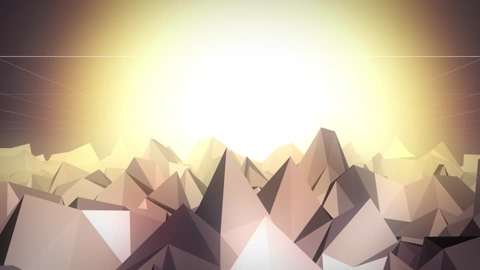
1 · Sepia Peaks
- The camera hugs the peaks exactly like the video. The player learns to steer and to graze.
- Only dark obsidian peaks appear, so you dodge but can't shoot yet. Grazing lights a spark trail and fills the Flux bar.
- The first hint text fades in on beat 1 of bar 2.
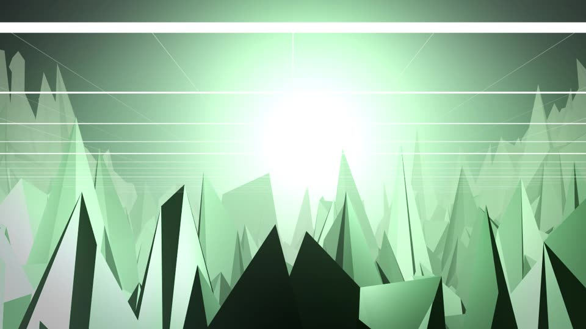
2 · Jade Spires
- Spikes shoot up out of the ground on the beat. You can see them start to rise half a beat before they reach full height.
- The scene's glitch scanlines become laser walls you have to fly under or over. Shots can't break them.
- This is the first scene with shootable green crystal spikes, so the Lock-on → Pulse tutorial runs here.
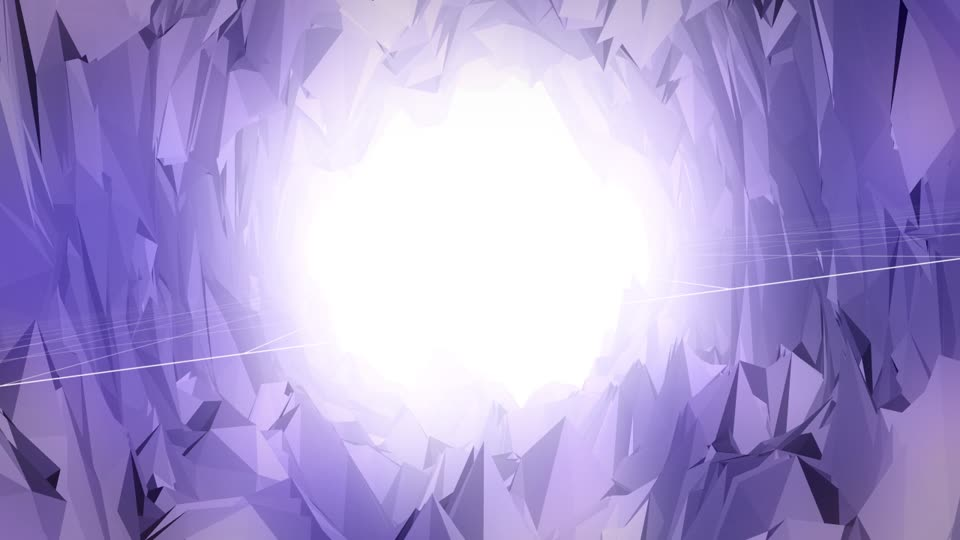
3 · Violet Tunnel
- The world wraps into a tube. Left and right now spin you around the wall, Thumper-style.
- The video's laser streaks sweep around the tube on half-notes, and you dodge them by rotating.
- The exit glare grows with the risers until a white-out leads into the drop.
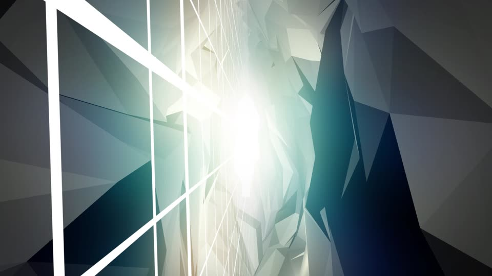
4 · Ice Shards: THE DROP
- A dense field of crystal shards, where you hold to lock onto up to 4 and release on the beat to shatter them.
- Each perfect release plays a glassy stinger in key, so a good player is effectively playing the lead melody.
- The white beams from the video become fixed laser bars you have to thread between.
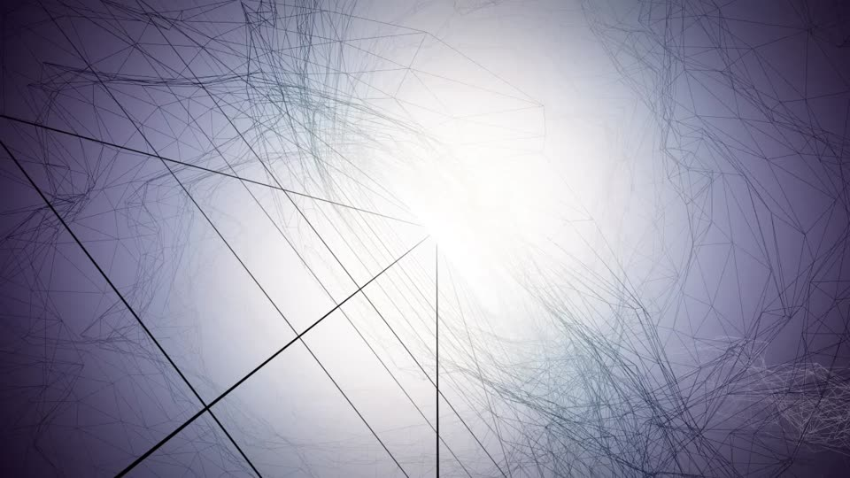
5 · Scribble Void (breather)
- There's no terrain and no hazards here. The hand-drawn lines in the video come together to form a path of light motes.
- Collecting every mote restores one shield crack. Players need the break after the drop.
- An idea for later: in Endless mode this could be a "draw your line" mini-mode.
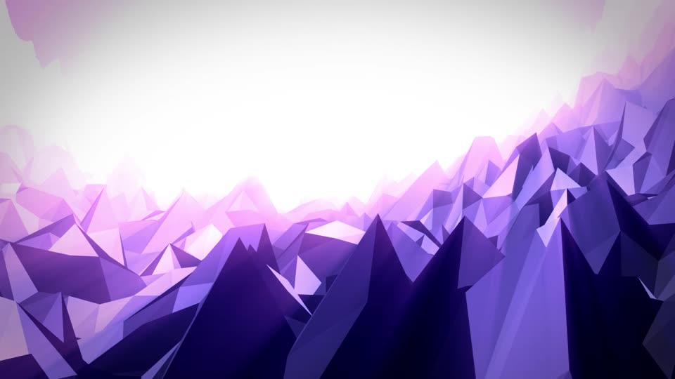
6 · Amethyst Ridge
- The camera banks like it does in the video. The horizon rolls every bar, so you constantly re-orient.
- The terrain moves in big waves, and staying on a wave's surface gives a "surf" graze bonus.
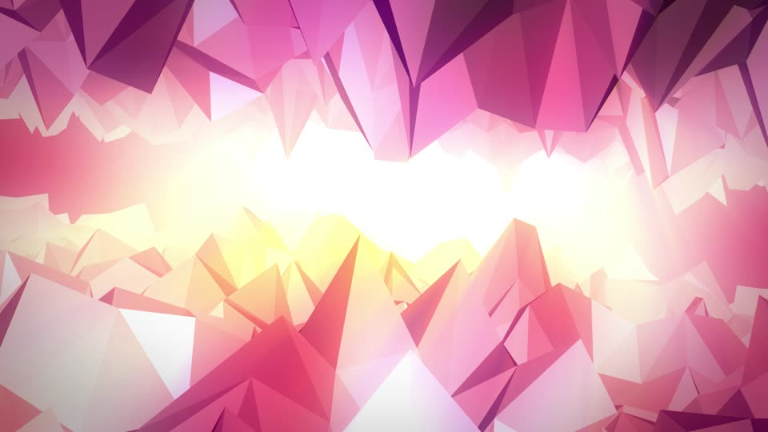
7 · Rose Canyon
- The terrain is above and below you, just like the pink sandwich shot in the video, so altitude control matters.
- Spikes drop from the ceiling on the backbeat. The gap narrows as the build rises.
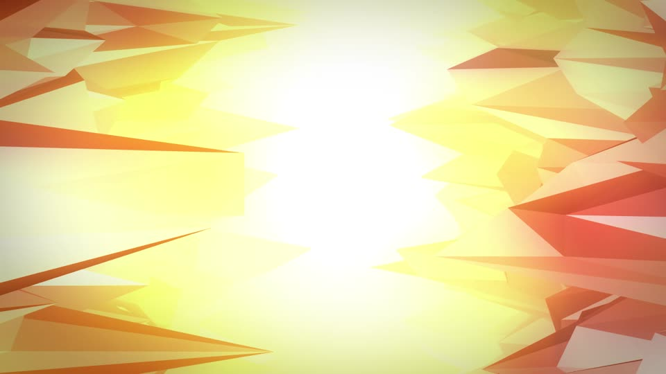
8 · Solar Shear: SECOND DROP
- The video's sideways-stretched shards become hazards flying across your path.
- This is the fastest scene. Overdrive is most likely to fire here, the moment players will want to share.
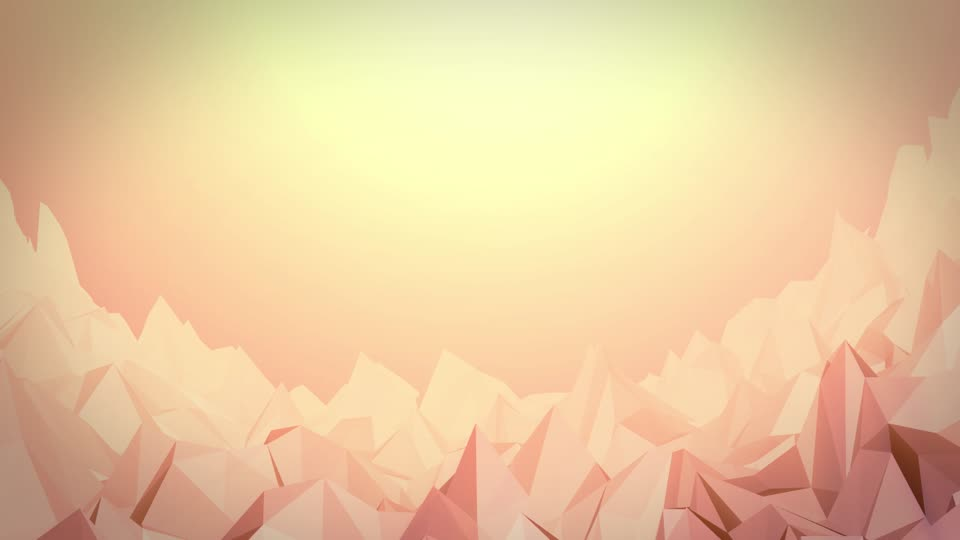
9 · Peach Dusk
- The sun sets and the vignette closes in. There are very few hazards.
- Your banked multiplier is shown on the final gate, and flying through it adds the bonus to your score.
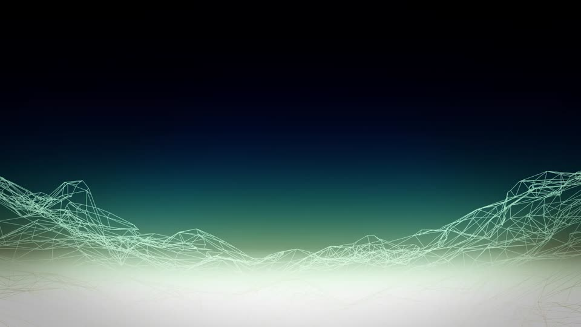
10 · Wire Night
- The world turns into wireframe, which is how the game shows that the loop is resetting. Results appear while you keep flying.
- The terrain then rebuilds from wireframe into solid peaks and Loop 2 starts with no menu in between. Dying anywhere returns you here with an instant restart.
Key moments
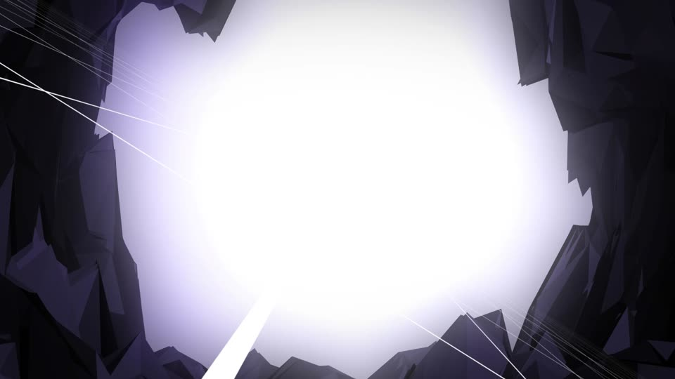
Hyperloop gate → white-out transition
- The ring forms at the vanishing point on bar 7. Fly through it on beat 1 of the next bar.
- The screen goes to white as in the video (0:34–0:36), then the next scene's palette blooms in from the light.
- Missing the gate still takes you to the next scene, but you lose the scene bonus and the flash is grey instead of white.
Firing: graze → lock → pulse
- Flux is the ammo, and grazing earns it. Flying brave gives you more firepower.
- Hold to lock onto up to 4 crystal spikes, then release on the beat. A perfect release scores double and plays a note in key. An off-beat release is weak and hits fewer targets.
- Shattered spikes drop shards that refill Flux if you fly close, which pulls you back into risky lines.